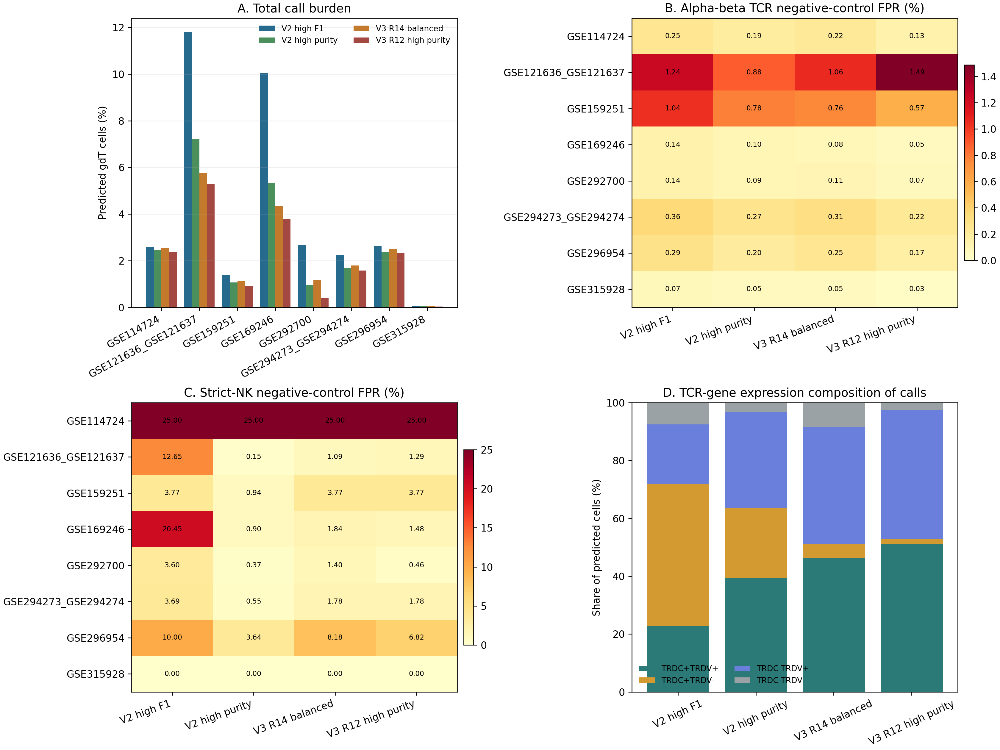
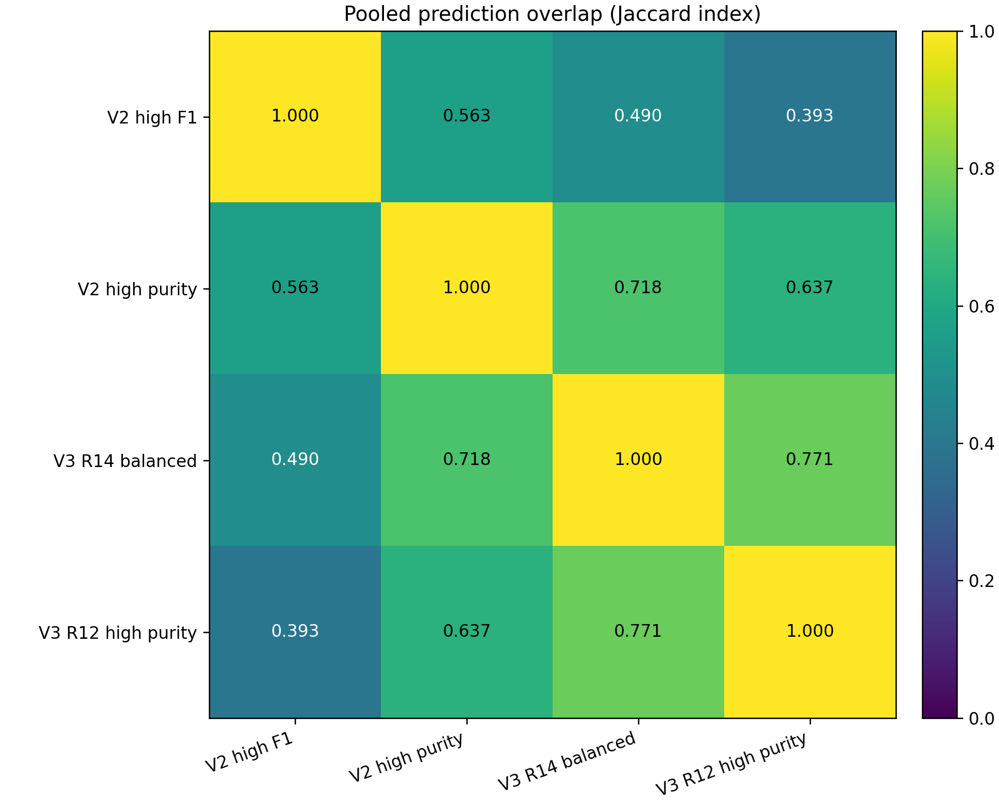

All four registered operating profiles were applied directly to the eight independently TNK-filtered cohorts using log1p(raw counts per 10,000). Model files were checksum-pinned and every H5AD was opened read-only.

| profile_id | all_calls | all_call_rate | abT_FP | abT_FPR | paired_abT_FP | paired_abT_FPR | single_abT_FP | single_abT_FPR | strict_NK_FP | strict_NK_FPR | known_negative_FP | known_negative_FPR | no_TCR_calls |
|---|---|---|---|---|---|---|---|---|---|---|---|---|---|
| v2_high_f1 | 45204 | 5.963% | 1237 | 0.366% | 561 | 0.199% | 676 | 1.203% | 10770 | 14.869% | 12007 | 2.925% | 43967 |
| v2_high_purity | 25441 | 3.356% | 912 | 0.270% | 411 | 0.146% | 501 | 0.891% | 525 | 0.725% | 1437 | 0.350% | 24529 |
| v3_round14_balanced | 22151 | 2.922% | 962 | 0.285% | 413 | 0.147% | 549 | 0.977% | 1242 | 1.715% | 2204 | 0.537% | 21189 |
| v3_round12_high_purity | 18922 | 2.496% | 767 | 0.227% | 299 | 0.106% | 468 | 0.833% | 872 | 1.204% | 1639 | 0.399% | 18155 |
v3_round12_high_purity has the lowest pooled alpha-beta TCR FPR (0.227%), whereas v2_high_purity has the lowest strict-NK FPR (0.725%). After excluding the reduced-feature GSE169246 sensitivity case, the lowest known-negative union FPR is v3_round12_high_purity (0.295%). Historical positive sensitivity still favors V3 Round 14 over Round 12. These data therefore do not support replacing the current operating profiles with a single new winner.A productive single TRA or single TRB chain is accepted as alpha-beta negative evidence, as requested. Strict NK controls require no productive alpha-beta or gamma-delta chain evidence. Calls among cells with no productive TCR are candidates, not validated true positives.
| scope | n_cohorts | profile_id | stratum | n_cells | predicted_gdT | call_rate | wilson_95_low | wilson_95_high |
|---|---|---|---|---|---|---|---|---|
| all_cohorts | 8 | v2_high_f1 | abT_any_chain | 338046 | 1237 | 0.366% | 0.346% | 0.387% |
| all_cohorts | 8 | v2_high_purity | abT_any_chain | 338046 | 912 | 0.270% | 0.253% | 0.288% |
| all_cohorts | 8 | v3_round14_balanced | abT_any_chain | 338046 | 962 | 0.285% | 0.267% | 0.303% |
| all_cohorts | 8 | v3_round12_high_purity | abT_any_chain | 338046 | 767 | 0.227% | 0.211% | 0.244% |
| all_cohorts | 8 | v2_high_f1 | strict_NK | 72434 | 10770 | 14.869% | 14.611% | 15.130% |
| all_cohorts | 8 | v2_high_purity | strict_NK | 72434 | 525 | 0.725% | 0.666% | 0.789% |
| all_cohorts | 8 | v3_round14_balanced | strict_NK | 72434 | 1242 | 1.715% | 1.623% | 1.812% |
| all_cohorts | 8 | v3_round12_high_purity | strict_NK | 72434 | 872 | 1.204% | 1.127% | 1.286% |
| all_cohorts | 8 | v2_high_f1 | known_negative_union | 410480 | 12007 | 2.925% | 2.874% | 2.977% |
| all_cohorts | 8 | v2_high_purity | known_negative_union | 410480 | 1437 | 0.350% | 0.332% | 0.369% |
| all_cohorts | 8 | v3_round14_balanced | known_negative_union | 410480 | 2204 | 0.537% | 0.515% | 0.560% |
| all_cohorts | 8 | v3_round12_high_purity | known_negative_union | 410480 | 1639 | 0.399% | 0.380% | 0.419% |
| complete_schema_sensitivity | 7 | v2_high_f1 | abT_any_chain | 283121 | 1162 | 0.410% | 0.388% | 0.435% |
| complete_schema_sensitivity | 7 | v2_high_purity | abT_any_chain | 283121 | 856 | 0.302% | 0.283% | 0.323% |
| complete_schema_sensitivity | 7 | v3_round14_balanced | abT_any_chain | 283121 | 916 | 0.324% | 0.303% | 0.345% |
| complete_schema_sensitivity | 7 | v3_round12_high_purity | abT_any_chain | 283121 | 737 | 0.260% | 0.242% | 0.280% |
| complete_schema_sensitivity | 7 | v2_high_f1 | strict_NK | 25176 | 1107 | 4.397% | 4.151% | 4.657% |
| complete_schema_sensitivity | 7 | v2_high_purity | strict_NK | 25176 | 102 | 0.405% | 0.334% | 0.492% |
| complete_schema_sensitivity | 7 | v3_round14_balanced | strict_NK | 25176 | 371 | 1.474% | 1.332% | 1.630% |
| complete_schema_sensitivity | 7 | v3_round12_high_purity | strict_NK | 25176 | 171 | 0.679% | 0.585% | 0.788% |
| complete_schema_sensitivity | 7 | v2_high_f1 | known_negative_union | 308297 | 2269 | 0.736% | 0.706% | 0.767% |
| complete_schema_sensitivity | 7 | v2_high_purity | known_negative_union | 308297 | 958 | 0.311% | 0.292% | 0.331% |
| complete_schema_sensitivity | 7 | v3_round14_balanced | known_negative_union | 308297 | 1287 | 0.417% | 0.395% | 0.441% |
| complete_schema_sensitivity | 7 | v3_round12_high_purity | known_negative_union | 308297 | 908 | 0.295% | 0.276% | 0.314% |
| schema_warning_cohorts | 1 | v2_high_f1 | abT_any_chain | 54925 | 75 | 0.137% | 0.109% | 0.171% |
| schema_warning_cohorts | 1 | v2_high_purity | abT_any_chain | 54925 | 56 | 0.102% | 0.079% | 0.132% |
| schema_warning_cohorts | 1 | v3_round14_balanced | abT_any_chain | 54925 | 46 | 0.084% | 0.063% | 0.112% |
| schema_warning_cohorts | 1 | v3_round12_high_purity | abT_any_chain | 54925 | 30 | 0.055% | 0.038% | 0.078% |
| schema_warning_cohorts | 1 | v2_high_f1 | strict_NK | 47258 | 9663 | 20.447% | 20.086% | 20.813% |
| schema_warning_cohorts | 1 | v2_high_purity | strict_NK | 47258 | 423 | 0.895% | 0.814% | 0.984% |
| schema_warning_cohorts | 1 | v3_round14_balanced | strict_NK | 47258 | 871 | 1.843% | 1.726% | 1.968% |
| schema_warning_cohorts | 1 | v3_round12_high_purity | strict_NK | 47258 | 701 | 1.483% | 1.378% | 1.596% |
| schema_warning_cohorts | 1 | v2_high_f1 | known_negative_union | 102183 | 9738 | 9.530% | 9.351% | 9.712% |
| schema_warning_cohorts | 1 | v2_high_purity | known_negative_union | 102183 | 479 | 0.469% | 0.429% | 0.513% |
| schema_warning_cohorts | 1 | v3_round14_balanced | known_negative_union | 102183 | 917 | 0.897% | 0.841% | 0.957% |
| schema_warning_cohorts | 1 | v3_round12_high_purity | known_negative_union | 102183 | 731 | 0.715% | 0.666% | 0.769% |

| dataset_id | profile_id | total_cells | predicted_gdT | predicted_rate | abT_n | abT_fp | abT_fpr | strict_NK_n | strict_NK_fp | strict_NK_fpr |
|---|---|---|---|---|---|---|---|---|---|---|
| GSE114724 | v2_high_f1 | 28652 | 742 | 2.590% | 26893 | 67 | 0.249% | 8 | 2 | 25.000% |
| GSE114724 | v2_high_purity | 28652 | 701 | 2.447% | 26893 | 51 | 0.190% | 8 | 2 | 25.000% |
| GSE114724 | v3_round12_high_purity | 28652 | 678 | 2.366% | 26893 | 36 | 0.134% | 8 | 2 | 25.000% |
| GSE114724 | v3_round14_balanced | 28652 | 726 | 2.534% | 26893 | 58 | 0.216% | 8 | 2 | 25.000% |
| GSE121636_GSE121637 | v2_high_f1 | 18793 | 2219 | 11.808% | 11439 | 142 | 1.241% | 2016 | 255 | 12.649% |
| GSE121636_GSE121637 | v2_high_purity | 18793 | 1353 | 7.199% | 11439 | 101 | 0.883% | 2016 | 3 | 0.149% |
| GSE121636_GSE121637 | v3_round12_high_purity | 18793 | 995 | 5.295% | 11439 | 170 | 1.486% | 2016 | 26 | 1.290% |
| GSE121636_GSE121637 | v3_round14_balanced | 18793 | 1084 | 5.768% | 11439 | 121 | 1.058% | 2016 | 22 | 1.091% |
| GSE159251 | v2_high_f1 | 68898 | 965 | 1.401% | 53773 | 557 | 1.036% | 106 | 4 | 3.774% |
| GSE159251 | v2_high_purity | 68898 | 733 | 1.064% | 53773 | 420 | 0.781% | 106 | 1 | 0.943% |
| GSE159251 | v3_round12_high_purity | 68898 | 627 | 0.910% | 53773 | 308 | 0.573% | 106 | 4 | 3.774% |
| GSE159251 | v3_round14_balanced | 68898 | 768 | 1.115% | 53773 | 407 | 0.757% | 106 | 4 | 3.774% |
| GSE169246 | v2_high_f1 | 354373 | 35620 | 10.052% | 54925 | 75 | 0.137% | 47258 | 9663 | 20.447% |
| GSE169246 | v2_high_purity | 354373 | 18869 | 5.325% | 54925 | 56 | 0.102% | 47258 | 423 | 0.895% |
| GSE169246 | v3_round12_high_purity | 354373 | 13384 | 3.777% | 54925 | 30 | 0.055% | 47258 | 701 | 1.483% |
| GSE169246 | v3_round14_balanced | 354373 | 15440 | 4.357% | 54925 | 46 | 0.084% | 47258 | 871 | 1.843% |
| GSE292700 | v2_high_f1 | 78254 | 2080 | 2.658% | 24577 | 34 | 0.138% | 21362 | 770 | 3.605% |
| GSE292700 | v2_high_purity | 78254 | 749 | 0.957% | 24577 | 23 | 0.094% | 21362 | 80 | 0.374% |
| GSE292700 | v3_round12_high_purity | 78254 | 312 | 0.399% | 24577 | 16 | 0.065% | 21362 | 98 | 0.459% |
| GSE292700 | v3_round14_balanced | 78254 | 929 | 1.187% | 24577 | 26 | 0.106% | 21362 | 299 | 1.400% |
| GSE294273_GSE294274 | v2_high_f1 | 55744 | 1246 | 2.235% | 36221 | 129 | 0.356% | 1464 | 54 | 3.689% |
| GSE294273_GSE294274 | v2_high_purity | 55744 | 943 | 1.692% | 36221 | 98 | 0.271% | 1464 | 8 | 0.546% |
| GSE294273_GSE294274 | v3_round12_high_purity | 55744 | 882 | 1.582% | 36221 | 81 | 0.224% | 1464 | 26 | 1.776% |
| GSE294273_GSE294274 | v3_round14_balanced | 55744 | 998 | 1.790% | 36221 | 113 | 0.312% | 1464 | 26 | 1.776% |
| GSE296954 | v2_high_f1 | 86608 | 2283 | 2.636% | 63405 | 184 | 0.290% | 220 | 22 | 10.000% |
| GSE296954 | v2_high_purity | 86608 | 2058 | 2.376% | 63405 | 128 | 0.202% | 220 | 8 | 3.636% |
| GSE296954 | v3_round12_high_purity | 86608 | 2023 | 2.336% | 63405 | 105 | 0.166% | 220 | 15 | 6.818% |
| GSE296954 | v3_round14_balanced | 86608 | 2171 | 2.507% | 63405 | 156 | 0.246% | 220 | 18 | 8.182% |
| GSE315928 | v2_high_f1 | 66813 | 49 | 0.073% | 66813 | 49 | 0.073% | 0 | 0 | |
| GSE315928 | v2_high_purity | 66813 | 35 | 0.052% | 66813 | 35 | 0.052% | 0 | 0 | |
| GSE315928 | v3_round12_high_purity | 66813 | 21 | 0.031% | 66813 | 21 | 0.031% | 0 | 0 | |
| GSE315928 | v3_round14_balanced | 66813 | 35 | 0.052% | 66813 | 35 | 0.052% | 0 | 0 |
Wilson 95% confidence intervals, source-GSE rows, single-chain versus paired-chain strata, and donor/library results are provided in the canonical CSV tables.
| profile_id | population | tcr_gene_quadrant | n_selected | n_cells | fraction_of_selected |
|---|---|---|---|---|---|
| v2_high_f1 | abT_false_positives | TRDC+TRDV+ | 1237 | 367 | 29.669% |
| v2_high_f1 | abT_false_positives | TRDC+TRDV- | 1237 | 48 | 3.880% |
| v2_high_f1 | abT_false_positives | TRDC-TRDV+ | 1237 | 592 | 47.858% |
| v2_high_f1 | abT_false_positives | TRDC-TRDV- | 1237 | 230 | 18.593% |
| v2_high_f1 | strict_NK_false_positives | TRDC+TRDV+ | 10770 | 290 | 2.693% |
| v2_high_f1 | strict_NK_false_positives | TRDC+TRDV- | 10770 | 9181 | 85.246% |
| v2_high_f1 | strict_NK_false_positives | TRDC-TRDV+ | 10770 | 440 | 4.085% |
| v2_high_f1 | strict_NK_false_positives | TRDC-TRDV- | 10770 | 859 | 7.976% |
| v2_high_purity | abT_false_positives | TRDC+TRDV+ | 912 | 287 | 31.469% |
| v2_high_purity | abT_false_positives | TRDC+TRDV- | 912 | 25 | 2.741% |
| v2_high_purity | abT_false_positives | TRDC-TRDV+ | 912 | 469 | 51.425% |
| v2_high_purity | abT_false_positives | TRDC-TRDV- | 912 | 131 | 14.364% |
| v2_high_purity | strict_NK_false_positives | TRDC+TRDV+ | 525 | 217 | 41.333% |
| v2_high_purity | strict_NK_false_positives | TRDC+TRDV- | 525 | 138 | 26.286% |
| v2_high_purity | strict_NK_false_positives | TRDC-TRDV+ | 525 | 151 | 28.762% |
| v2_high_purity | strict_NK_false_positives | TRDC-TRDV- | 525 | 19 | 3.619% |
| v3_round14_balanced | abT_false_positives | TRDC+TRDV+ | 962 | 330 | 34.304% |
| v3_round14_balanced | abT_false_positives | TRDC+TRDV- | 962 | 9 | 0.936% |
| v3_round14_balanced | abT_false_positives | TRDC-TRDV+ | 962 | 502 | 52.183% |
| v3_round14_balanced | abT_false_positives | TRDC-TRDV- | 962 | 121 | 12.578% |
| v3_round14_balanced | strict_NK_false_positives | TRDC+TRDV+ | 1242 | 288 | 23.188% |
| v3_round14_balanced | strict_NK_false_positives | TRDC+TRDV- | 1242 | 117 | 9.420% |
| v3_round14_balanced | strict_NK_false_positives | TRDC-TRDV+ | 1242 | 406 | 32.689% |
| v3_round14_balanced | strict_NK_false_positives | TRDC-TRDV- | 1242 | 431 | 34.702% |
| v3_round12_high_purity | abT_false_positives | TRDC+TRDV+ | 767 | 275 | 35.854% |
| v3_round12_high_purity | abT_false_positives | TRDC+TRDV- | 767 | 6 | 0.782% |
| v3_round12_high_purity | abT_false_positives | TRDC-TRDV+ | 767 | 440 | 57.366% |
| v3_round12_high_purity | abT_false_positives | TRDC-TRDV- | 767 | 46 | 5.997% |
| v3_round12_high_purity | strict_NK_false_positives | TRDC+TRDV+ | 872 | 272 | 31.193% |
| v3_round12_high_purity | strict_NK_false_positives | TRDC+TRDV- | 872 | 7 | 0.803% |
| v3_round12_high_purity | strict_NK_false_positives | TRDC-TRDV+ | 872 | 377 | 43.234% |
| v3_round12_high_purity | strict_NK_false_positives | TRDC-TRDV- | 872 | 216 | 24.771% |
| dataset_id | source_gse_id | group_value | profile_id | stratum | n_cells | predicted_gdT | call_rate | wilson_95_low | wilson_95_high |
|---|---|---|---|---|---|---|---|---|---|
| GSE121636_GSE121637 | GSE121636 | GSM3440845_GU0715_T | v2_high_f1 | abT_any_chain | 2220 | 119 | 5.360% | 4.498% | 6.377% |
| GSE294273_GSE294274 | GSE294273 | GSM8901618_HM009 | v2_high_f1 | abT_any_chain | 1989 | 48 | 2.413% | 1.825% | 3.185% |
| GSE169246 | GSE169246 | Post_P002_t | v2_high_f1 | strict_NK | 212 | 90 | 42.453% | 35.992% | 49.182% |
| GSE169246 | GSE169246 | Prog_P007_b | v2_high_f1 | strict_NK | 3173 | 1260 | 39.710% | 38.021% | 41.424% |
| GSE121636_GSE121637 | GSE121636 | GSM3440845_GU0715_T | v2_high_purity | abT_any_chain | 2220 | 82 | 3.694% | 2.986% | 4.562% |
| GSE294273_GSE294274 | GSE294273 | GSM8901618_HM009 | v2_high_purity | abT_any_chain | 1989 | 35 | 1.760% | 1.268% | 2.437% |
| GSE169246 | GSE169246 | Post_P018_t | v2_high_purity | strict_NK | 175 | 17 | 9.714% | 6.154% | 15.005% |
| GSE169246 | GSE169246 | Post_P025_t | v2_high_purity | strict_NK | 251 | 16 | 6.375% | 3.961% | 10.103% |
| GSE121636_GSE121637 | GSE121636 | GSM3440845_GU0715_T | v3_round12_high_purity | abT_any_chain | 2220 | 155 | 6.982% | 5.995% | 8.118% |
| GSE294273_GSE294274 | GSE294273 | GSM8901618_HM009 | v3_round12_high_purity | abT_any_chain | 1989 | 29 | 1.458% | 1.017% | 2.086% |
| GSE169246 | GSE169246 | Post_P018_t | v3_round12_high_purity | strict_NK | 175 | 29 | 16.571% | 11.793% | 22.786% |
| GSE169246 | GSE169246 | Pre_P023_t | v3_round12_high_purity | strict_NK | 106 | 12 | 11.321% | 6.596% | 18.751% |
| GSE121636_GSE121637 | GSE121636 | GSM3440845_GU0715_T | v3_round14_balanced | abT_any_chain | 2220 | 102 | 4.595% | 3.799% | 5.547% |
| GSE294273_GSE294274 | GSE294273 | GSM8901618_HM009 | v3_round14_balanced | abT_any_chain | 1989 | 42 | 2.112% | 1.566% | 2.842% |
| GSE169246 | GSE169246 | Post_P018_t | v3_round14_balanced | strict_NK | 175 | 27 | 15.429% | 10.825% | 21.517% |
| GSE169246 | GSE169246 | Pre_P023_t | v3_round14_balanced | strict_NK | 106 | 11 | 10.377% | 5.894% | 17.632% |
These values come from the frozen models' prior validation frames and are shown only to retain the sensitivity context missing from the new studies. They are not pooled with the extension results because the cohorts and truth definitions differ.
| profile_id | evaluation_frame | precision | recall | specificity | f1 | source_file |
|---|---|---|---|---|---|---|
| v2_high_f1 | packaged V2 validation | 94.784% | 87.007% | 99.663% | 90.729% | Integrated_dataset/models/gdT_prediction_classifier/gdTAI_v2.0/mode_metrics.csv |
| v2_high_purity | packaged V2 validation | 95.148% | 86.280% | 99.690% | 90.497% | Integrated_dataset/models/gdT_prediction_classifier/gdTAI_v2.0/mode_metrics.csv |
| v3_round12_high_purity | historical full-atlas primary gold | 98.226% | 75.604% | 99.869% | 85.443% | Integrated_dataset/tables/gdT_prediction/gdtai_v3_round12_vs_round14/full_atlas_performance.csv |
| v3_round14_balanced | historical full-atlas primary gold | 97.521% | 80.559% | 99.804% | 88.233% | Integrated_dataset/tables/gdT_prediction/gdtai_v3_round12_vs_round14/full_atlas_performance.csv |
| profile_id | model_id | mode | threshold | gene_features | artifact_sha256 | artifact_path |
|---|---|---|---|---|---|---|
| v2_high_f1 | gdtai_v2 | high_f1 | 0.9063586592674255 | 187 | c7f6e7d1d1c0c8de9e7abbaa7c5b70c1070b43c964ccdb94e414bc5278e13c3e | Integrated_dataset/models/gdT_prediction_classifier/gdTAI_v2.0/gdTAI_v2_model.pkl |
| v2_high_purity | gdtai_v2 | high_purity | annotation-specific | 187 | c7f6e7d1d1c0c8de9e7abbaa7c5b70c1070b43c964ccdb94e414bc5278e13c3e | Integrated_dataset/models/gdT_prediction_classifier/gdTAI_v2.0/gdTAI_v2_model.pkl |
| v3_round14_balanced | gdtai_v3 | fixed_threshold | 0.936 | 210 | 16dedc0081da9b8487887341232bcf8c9c9403dd3bbd72e04cab43d4cd7b2e09 | Integrated_dataset/models/gdT_prediction_classifier/gdTAI_v3.0/gdTAI_v3_model.pkl |
| v3_round12_high_purity | gdtai_v3_round12 | fixed_threshold | 0.5 | 210 | 7373e79350f7db190c415b376b9763e31652754438ee8c5afd3853beb7b2ebc4 | Integrated_dataset/models/gdT_prediction_classifier/gdtai_v3_round12_vs_round14/round12_model.pkl |
| dataset_id | n_cells_evaluated | matrix_encoding | model_gene_fraction | auxiliary_audit_gene_fraction | model_schema_warning | missing_critical_genes |
|---|---|---|---|---|---|---|
| GSE114724 | 28652 | csr_matrix | 100.000% | 100.000% | False | |
| GSE121636_GSE121637 | 18793 | csr_matrix | 100.000% | 100.000% | False | |
| GSE159251 | 68898 | csr_matrix | 90.476% | 100.000% | False | |
| GSE169246 | 354373 | csr_matrix | 61.429% | 100.000% | True | |
| GSE292700 | 78254 | csr_matrix | 100.000% | 100.000% | False | |
| GSE294273_GSE294274 | 55744 | csr_matrix | 100.000% | 100.000% | False | |
| GSE296954 | 86608 | csr_matrix | 100.000% | 100.000% | False | |
| GSE315928 | 66813 | csr_matrix | 100.000% | 100.000% | False |
A schema warning does not mean critical genes are absent. It means fewer than 80% of the full model feature genes were available. Such cohorts must be interpreted separately because zero-filled missing genes can shift predictions.
Input: cohort-separated Phase 1 TNK H5ADs. Normalization: raw integer-like X counts were normalized cell-wise to 10,000 and transformed with log1p in chunks. Models: V2 high-F1, V2 annotation-specific high-purity, V3 Round 14 balanced, and V3 Round 12 high-purity were loaded only after SHA256 verification.
Alpha-beta negative: productive TRA or TRB, no productive TRG/TRD, and not marked doublet. Paired and single-chain cells are reported separately. Strict NK negative: explicit/derived NK classification with no productive TRA/TRB/TRG/TRD and not marked doublet. Uncertainty: Wilson 95% binomial intervals. Paired comparisons: exact cell-level McNemar tests are descriptive because cells within donors are correlated.
Decision: No model selected or promoted: the new cohorts do not contain an unbiased gdT positive truth set.